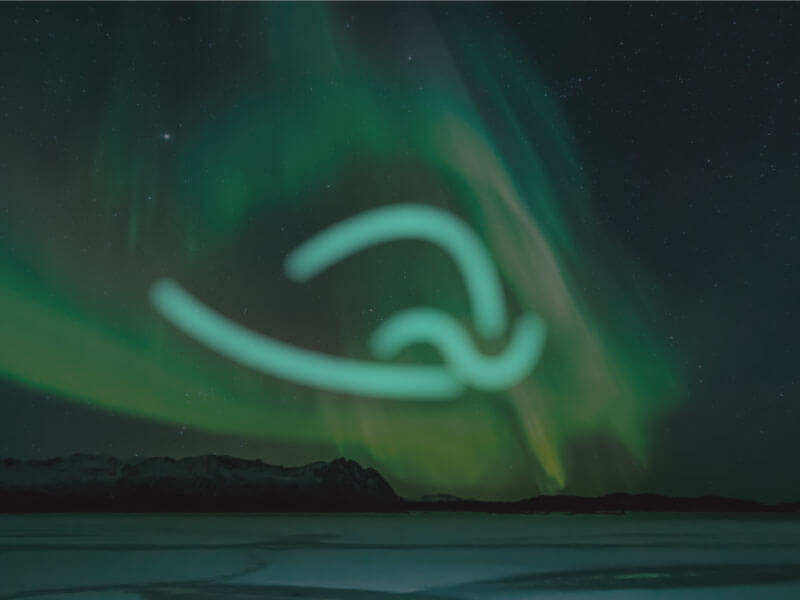

Aurora Borealis
An aurora, sometimes referred to as a polar light or northern light, is a natural light display in the sky, predominantly seen in the high latitude (Arctic and Antarctic) regions.
Most auroras occur in a band known as the auroral zone. Most clearly seen at night against a dark sky. A region that currently displays an aurora is called the auroral oval, a band displaced towards the nightside of the Earth.
In northern latitudes, the effect is known as the Aurora Borealis or the Northern Lights. The former term was coined by Galileo in 1619, from the Roman goddess of the dawn and the Greek name for the north wind. The Aurora Australis is visible from high southern latitudes in Antarctica, Chile, Argentina, New Zealand, and Australia.